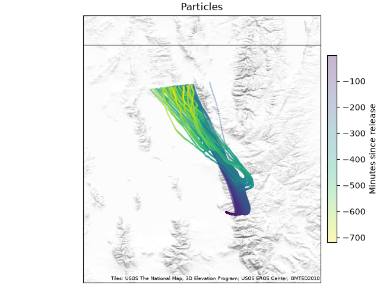
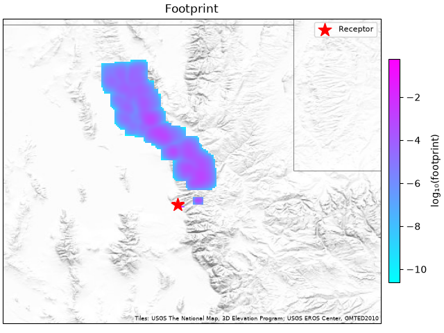

Your First Footprint#
This page takes you from one measurement to a footprint map. It uses Python. The first part makes one footprint with two function calls. The second part runs the same thing as a project, which is how you run many receptors and keep the results. The same project from the command line is at the end.
You will:
describe one measurement (a receptor)
point PYSTILT at meteorology
follow particles back in time from the receptor
calculate and plot the footprint
run the same receptor as a project
Before you start#
STILT moves particles with wind fields from a weather model, stored as ARL-format files. You need files covering your measurement time and every hour of the run before it: for a 24-hour backward run, from 24 hours before the measurement to just after it. A simulation with a file missing fails, naming the hours.
If you already have ARL files, for example in a group archive, tell PYSTILT
the folder they are in, a pattern for their names, and how many hours each
file covers. For files named like 20210115_06, each holding six hours:
met = {
"directory": "/path/to/arl/hrrr",
"file_format": "%Y%m%d_%H", # date codes: %Y year, %m month, %d day, %H hour
"file_tres": "6h", # each file covers 6 hours
}
If you don’t have ARL files, PYSTILT can download them from NOAA’s archive
into a folder you choose. This needs pip install "pystilt[download]".
met = {
"download": "hrrr", # which NOAA ARL archive
"directory": "/path/to/download/folder",
"subgrid_enable": True, # keep only your region
"subgrid_bounds": {"xmin": -114, "xmax": -110, "ymin": 39, "ymax": 42},
}
Warning
NOAA’s files cover whole continents, so the first download for a given period is several gigabytes even though only your region is kept. Downloaded files are reused on later runs. See Meteorology for the available products.
Step 1: Describe your measurement#
A receptor is where and when you measured. This one is a sensor 10 m above the ground on the University of Utah campus, at 08:00 UTC on 15 January 2021:
In [1]: import stilt
In [2]: receptor = stilt.PointReceptor(
...: time="2021-01-15 08:00", # UTC
...: longitude=-111.848,
...: latitude=40.766,
...: altitude=10, # meters above ground level
...: )
...:
Step 2: Follow the particles#
stilt.run_trajectories() releases particles at the receptor and
follows them back in time through the meteorology:
In [3]: particles = stilt.run_trajectories(
...: receptor,
...: met,
...: n_hours=-24, # follow the air 24 hours back in time
...: numpar=200, # number of particles to release
...: krand=2, # the random numbers a seed can fix
...: seed=42, # same seed, same particles
...: )
...:
n_hoursHow far back in time to follow the air. Negative means backward, which is what you want for measurements. 24 to 72 hours is typical.
numparHow many particles to release. More particles give a smoother footprint but take longer. 200 is fine for a first try. Research runs often use 500 to 1000.
krandandseedHYSPLIT draws random numbers for the turbulence that moves each particle.
krand=2with aseedmakes the draws the same on every run, so your particles match the ones on this page. Without them (krand=4, the default) every run draws its own, and the particles and the footprint change a little from run to run.
This runs HYSPLIT, the transport model, and usually takes a minute or two.
The particles are a pandas.DataFrame, one row per particle per
time step:
In [4]: particles.head()
Out[4]:
age particle lon lat ... samt sigw tlgr foot_no_hnf_dilution
0 -1.0 1.0 -111.8474 40.7658 ... 1.0 0.038 43.3137 0.021248
1 -1.0 2.0 -111.8473 40.7658 ... 1.0 0.038 43.3137 0.021248
2 -1.0 3.0 -111.8474 40.7658 ... 1.0 0.038 43.3137 0.021248
3 -1.0 4.0 -111.8474 40.7658 ... 1.0 0.038 43.3137 0.021248
4 -1.0 5.0 -111.8474 40.7658 ... 1.0 0.038 43.3137 0.021248
[5 rows x 13 columns]
In [5]: particles.stilt.plot.map();


The particles start at the receptor and spread out. The met files here cover
only a small region around Salt Lake, and the particles leave it before the 24
hours are up. A particle that leaves the met stops there. This is how many hours
they went (age is in minutes):
In [6]: print(f"{particles['age'].abs().max() / 60:.1f} hours")
12.0 hours
If that is short of n_hours, the footprint covers only those hours.
Checking A Run says when that matters.
Step 3: Calculate the footprint#
The footprint is calculated on a grid. Make it big enough to include the areas upwind of your site. Here the cells are 0.01°, about 1 km:
In [7]: grid = stilt.Grid(
...: xmin=-113.0, xmax=-110.5, # longitude range
...: ymin=40.0, ymax=42.0, # latitude range
...: xres=0.01, yres=0.01, # grid cell size in degrees
...: )
...:
In [8]: foot = stilt.calc_footprint(particles, receptor, grid)
In [9]: foot.stilt.plot.map();

The footprint starts at the receptor and stretches in the direction the air came from, here to the north-northwest. The map shows the footprint summed over time, on a log scale. Cells with more color influenced the measurement more.
The footprint is an xarray.DataArray with dimensions
(time, lat, lon), in units of ppm per (µmol m⁻² s⁻¹). It has one map for
each hour the particles were still inside the met files. Sum it over time with
xarray:
In [10]: foot.sizes
Out[10]: Frozen({'time': 12, 'lat': 200, 'lon': 250})
In [11]: foot.sum("time").sizes
Out[11]: Frozen({'lat': 200, 'lon': 250})
PYSTILT’s own methods on the particles and the footprint are under
.stilt.
Step 4: Run it as a project#
Two calls are enough for one receptor. For many receptors, make a
Project: a folder that holds your receptors and settings,
runs every receptor, and keeps the results. Project.init creates the folder and writes both to it. The
settings are the ones above:
In [12]: project = stilt.Project.init(
....: "./my_first_project",
....: receptors=[receptor],
....: mets={"hrrr": met}, # "hrrr" is a name you choose
....: variants={"hrrr": {}}, # one variant: these settings, met hrrr
....: n_hours=-24,
....: numpar=200,
....: krand=2,
....: seed=42,
....: grid=grid,
....: )
....:
Before running, check the project. project.check() looks for what would
stop a run before it starts: met files missing for a receptor’s hours, a
receptor outside the grid, and a met folder that does not exist. It returns a
table with a row for each thing found, so an empty table means nothing is in
the way:
In [13]: project.check()
Out[13]:
Empty DataFrame
Columns: [check, variant, receptor, message]
Index: []
The check looks for files, not inside them, so a run that passes it can still fail later, if a met file is damaged. Checking A Run says how to tell.
In [14]: project.run();
run() runs the particles and the footprint of every receptor, and
returns when they are done.
PYSTILT runs each receptor once per variant. With the settings above
there is one variant, named hrrr after the met. One receptor under
one variant is a simulation. Look yours up by the receptor’s id and
the variant name:
In [15]: sim = project.simulation(receptor.id, "hrrr")
In [16]: sim.particles.head()
Out[16]:
age particle lon ... tlgr foot_no_hnf_dilution time
0 -1.0 1.0 -111.8474 ... 43.3137 0.021248 2021-01-15 07:59:00
1 -1.0 2.0 -111.8473 ... 43.3137 0.021248 2021-01-15 07:59:00
2 -1.0 3.0 -111.8474 ... 43.3137 0.021248 2021-01-15 07:59:00
3 -1.0 4.0 -111.8474 ... 43.3137 0.021248 2021-01-15 07:59:00
4 -1.0 5.0 -111.8474 ... 43.3137 0.021248 2021-01-15 07:59:00
[5 rows x 14 columns]
In [17]: sim.footprint.stilt.plot.map();


This is the same footprint as in Step 3, because the settings and the seed
are the same. The seed belongs to the variant, so every receptor of a variant
runs with it. Without krand: 2 and a seed, each run draws its own
random numbers for the turbulence, and 200 particles are few, so a second
run’s footprint looks a little different.
What PYSTILT wrote#
Your inputs are in the project folder, and the results in its output
folder.
my_first_project/
config.yaml # your settings
receptors.csv # your receptors
output/
particles/settings=hrrr-a3f9c2/date=2021-01-15/202101150800_-111.848_40.766_10.parquet
footprints/settings=hrrr-93278c/date=2021-01-15/202101150800_-111.848_40.766_10.parquet
logs/settings=hrrr-a3f9c2/date=2021-01-15/202101150800_-111.848_40.766_10.log
Each folder under particles, footprints, and logs is a
settings folder: the variant’s name, hrrr,
plus a short code made from its settings. Change a setting and the next
run writes to a new folder, so nothing is overwritten. The file name is
the receptor id: the time, longitude, latitude, and altitude.
Your settings and receptors are saved in the folder, so you can open the project again later without repeating them:
project = stilt.Project("./my_first_project")
Project.init runs once per project. It stops with a
FileExistsError if the folder already has a config.yaml. To change a
setting later, edit config.yaml.
If you call project.run() again, nothing happens. PYSTILT sees that the
outputs already exist and skips them. If you add receptors with
project.add_receptors(...), only the new ones run.
The same run from the command line#
Create a project folder with a starter config.yaml and receptors.csv:
stilt init ./my_first_project
Open my_first_project/config.yaml and set the meteorology folder, file
pattern, and footprint grid. The keys are the same as in the Python example
above:
mets:
hrrr:
directory: /path/to/arl/hrrr
file_format: "%Y%m%d_%H"
file_tres: 6h
variants:
hrrr: {}
grid:
xmin: -113.0
xmax: -110.5
ymin: 40.0
ymax: 42.0
xres: 0.01
yres: 0.01
n_hours: -24
numpar: 200
Add your receptor to my_first_project/receptors.csv below the header
line, so the file reads:
time,longitude,latitude,altitude
2021-01-15 08:00:00,-111.848,40.766,10
Then check the project, run it, and look at the result:
stilt check ./my_first_project
stilt run ./my_first_project
stilt status ./my_first_project
stilt check lists what would stop a run, such as a met file that is not
there, and exits with 1 when it lists anything. It prints no rows when
everything is in place.
Next steps#
Run many receptors: Tutorial: A Week Of Tower Footprints
Understand the different receptor types: Receptors
More plotting and analysis: Footprints And Particles
Run thousands of simulations on a cluster: On An HPC Cluster (Slurm)